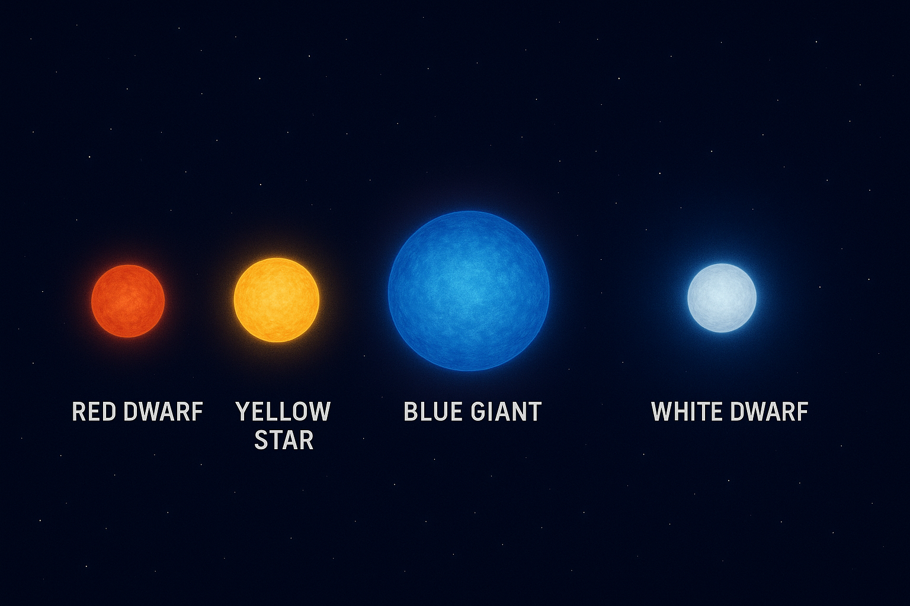

Stars
What are stars?
Stars are huge balls of hot, glowing gas (mostly hydrogen and helium) that produce light and heat through nuclear fusion.
Life Cycle of A Star:

- Nebula – stars form inside giant clouds of gas and dust.
- Protostar – the gas condenses and heats up.
- Main Sequence Star – stable phase (like our Sun).
- Red Giant / Supergiant – star expands when fuel runs out.
-
End stage – Small/medium stars → White Dwarf → Black Dwarf
Massive stars → Supernova → Neutron Star or Black Hole
Types of Stars
- Red Dwarfs – small, cool, and long-living (most common).
- Yellow Stars – like our Sun.
- Blue Giants – very hot, bright, and short-lived.
- Neutron Stars – incredibly dense remains of supernova explosions.
Fun Facts
- The Sun is about 4.6 billion years old and halfway through its life.
- The largest stars can be 1,000 times bigger than the Sun.